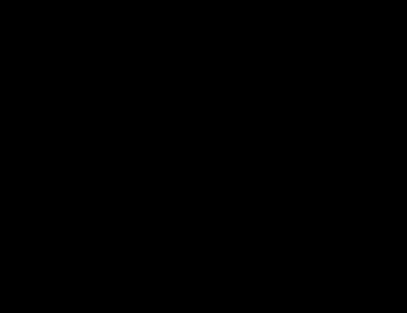
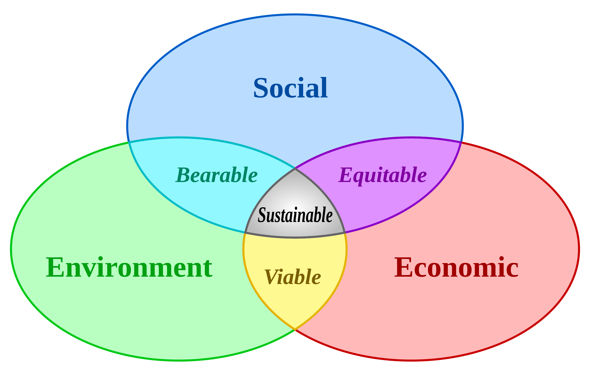
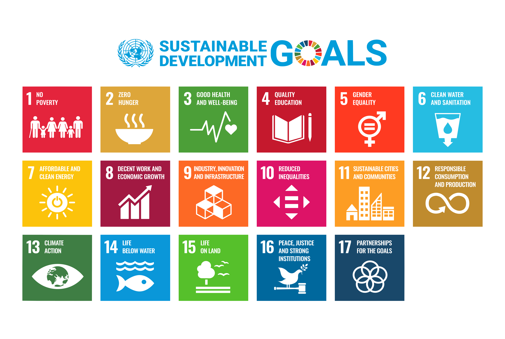
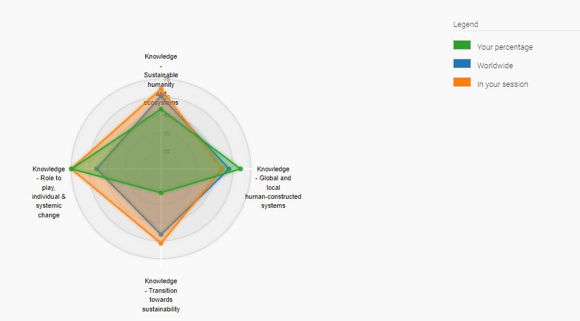
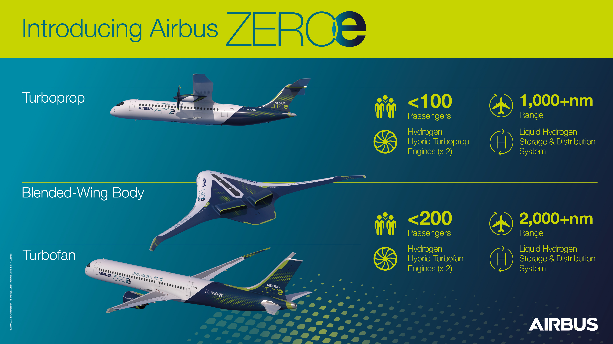
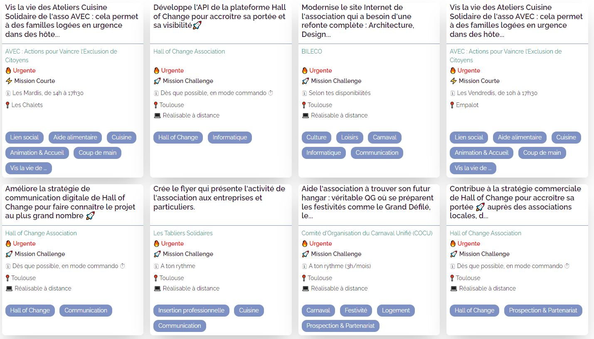

Engineering projects

As everyone knows, nowadays is maybe the worst days to live if we care about the environment and nature. The more time goes on, the more places are polluted or corrupted by humans for their own benefits. We treat the planet as a product to exploit rather than a gift to enjoy. And as more people say that we should give back the earth what she offered us, not much things seem to change.
But engineers may have the potential to build the solution for a better future, or at least, make it a bit happier and greener for everyone including the earth.
In this section, I will talk about what I have learned during my time at N7 about sustainable development.

This is why sustainable development was defined in 1987 as "development that meets the needs of the present generation without compromising the ability of future generations to meet their own needs".
But how such a change is possible?
First, we need to take a look at the little graph above. The three big circles are the main actors for sustainable development :
Social, this represents the people with their living conditions, their health.
Economic, which are the companies and their needs.
Environment, the care about our planet and the resources we extract.
The first step was to add the environment in the equation of development and thus find a way to force the economic actor to respect it. The most useful solution was to set goal that countries and companies need to "respect". We can think about the Paris Climate Accords in 2015 signed by 193 countries whose goal is to maintain the global temperature below 2°C which would avoid future generation an ecological disaster.
As you can see, set goals and ask people to respect it may work since almost every countries signed the Paris Climate Accords. This is why the United Nations set 17 goals to transform our world.

"Think globally, act locally"

Role to play, individual & systemic change, Transition towards sustainability, Global and local human-constructed systems and Sustainable humanity and ecosystems.
The graph above represents my results for this test. And the first thing we can see is I gave a lot of good answers in the Role to play part. It mainly corresponds to the "act locally" part of the sustainable development motto. I know what I do and I should do on my scale to help the sustainable development. For example, buy products that respect people and the environment or consume less red meats.
The second best part in my results is the Global and local human-constructed systems. In the test, these questions are mainly about big decisions taken by groups like the UNESCO. I was not very informed about these, but when I was reading the different answers, only one of them really stood out. This is why this part went well in the quiz.
But now we will talk about the two others parts that I've had trouble with.
First is the Sustainable humanity and ecosystems part. This part contains questions about the current state of sustainable development. For exemple, the fact that between 50% to 90% of earthworms disappeared from the soil in the last fifty years due to the use of chemical inputs and pesticides. I know I currently not aware enough of these problems. This can resolved if I read more articles or watch more videos about why is our planet dying. And one of the goals of the sulitest is raise awareness and for me, it worked perfectly. Now want more to know what is happening around me. But for me, the more you I was learning about the problems we face, the more I was depressed and hopeless. I was telling myself "Is there even a way a situation like this can change?". And this is why it is important to focus on the other side of the problems : their solutions.
And the solutions are the questions of the last part of the sulitest. And once again, if I was not very aware of the problems, I cannot know anything about the solutions like the definition of Agroecology or the impact of sustainable development on companies. In my opinion, it's very important to know that everything is not lost, to avoid losing hope. A lot of people are working very hard to make the future better by creating new technologies or launching various projects.
And I was lucky to attend multiple courses were professionals from different companies told us about what is like to be an actor of change, and this is the subject of the next part.
During the sessions of CAM (carrer and management), we had various an external stakeholders who told us about their work in the engineering world and what they are doing to help build a future tomorrow.
For example, we had two people from Airbus who learned us a lot about the aviation world. For exemple their goal is to make planes consume less and less kerosene because it pollutes a lot. And a lot of researchs are trying to create the future of the planes's fuel : the dihydrogen. They have until 2050 to achieve this goal. And this will probably define the future of aviation because currently, the planes are less and less used due to their high fuel consuption and high pollution in the air.

It's a very promising project if we end up with new technologies that will help us reduce the air pollution, but it is important to note that the cost and pollution for that kind of project is also enormous. Let's hope that one day, we could fly pollution free.
Another stakeholders we listened to was Marc the founder of the association Hall of Change. Their mission is to help people to be involved in an association, or at least, in different actions such as cooking for families housed in emergency in hotels.

It helps people to have a better understanding and view of all the different associations in Toulouse (more than 20.000). And being part of this clearly helps the sustainable development because you act locally.
I personally would love to be part of an association like this, but with the intership and the huge amount of courses that we have when we come back, I'm afraid I don't have much time left during the week. But I will start to use this website to do some actions sometimes, it's only a couple of hour in Toulouse once in a week, I think my timetable can handle it.
And this is what I liked the most about this module, the fact that I discovered new various ways to not only improve the future by working for the sustainable development, also improve ourselves by meeting other people and getting out of our comfort zone and work on a subject we have a limited knowledge about.
I am currently at Thalès Alénia Space, and we are working on multiple projects regarding space and satellites. Because this is a very big company, it is pretty hard to have an idea that would affect everyone and realize it. But, I still I thought of several things :
The easiest one is to reduce the electricity consumption in the offices by asking everyone to turn off their computers, electronic equipment before leaving the place. If I could, I would put flyers everywhere to inform as many people as possible. Also, we have a system of message at TAS were the administrators can send a message to everyone in a building at the same. It could be a good idea to use this system to remind everyone their duties.
Another idea could be to encourage telecommuting to reduce travel or at least, help reduce car utilisation. I should ask the "Comité d'entreprise" if they can give a small bonus for all the people using bike/public transport to go to work.
And finally, because sustainability is not yet a very famous theme, I could ask the human resources to add a formations about this topic. Having external stakeholders like in CAM that know what they are talking about is could be the best situation to help people understand the ins and outs of sustainable development.